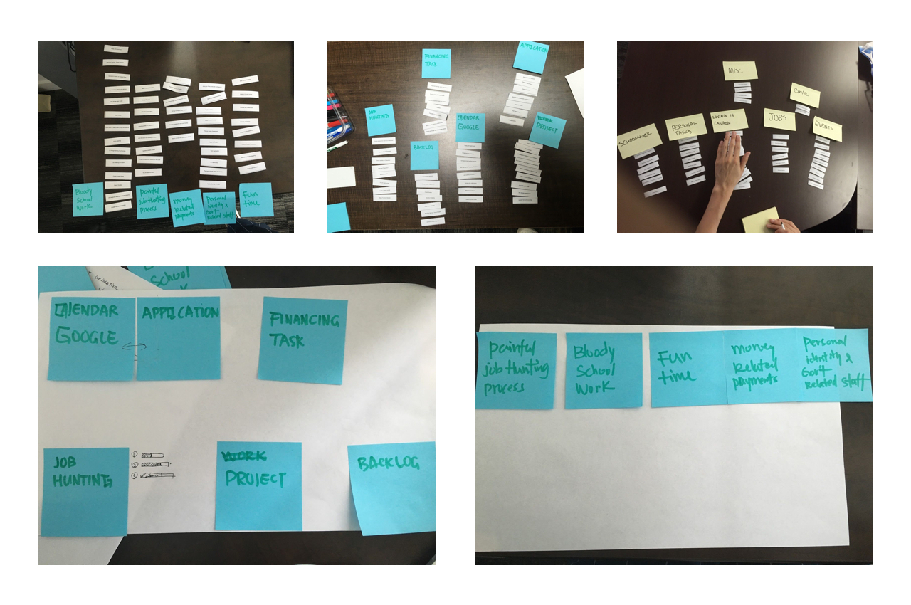
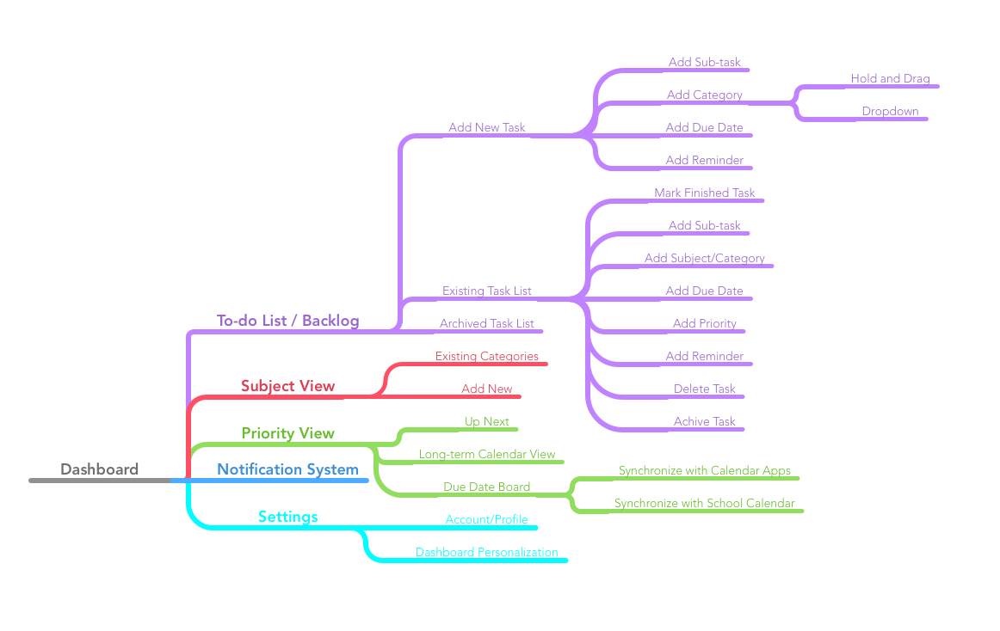
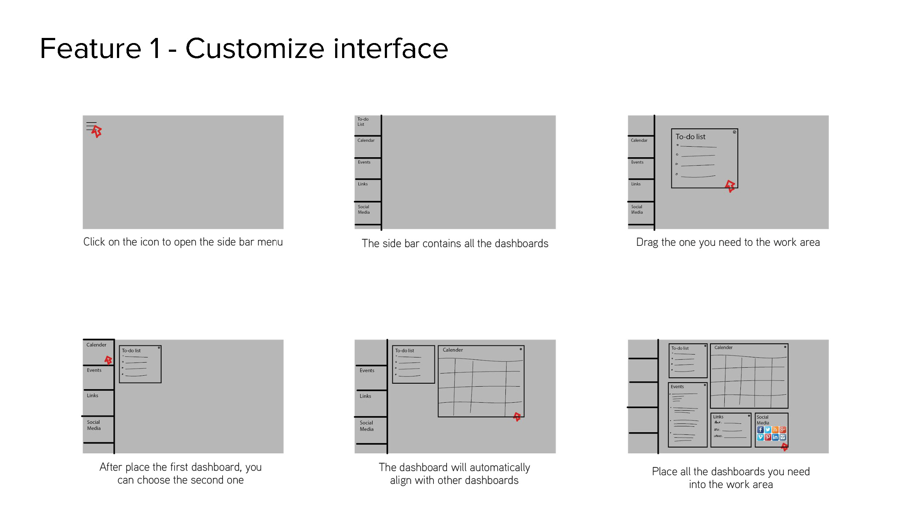

SKED - A Personal Task Management Dashboard for University Students
Timeframe: 05/2016 - 08/2016
Role: UX Designer
The Challenge
Here is Vancouver!
Graduate students at the Centre for Digital Media are not only dedicated to schoolwork, but also involved in all kinds of projects. However, there is no efficient tool to help university students manage both their school and personal lifes.
The 11-week project was made by a team of 5 as part of my graduate course The Fundamentals of UX work.
Design Process
The design process of this project can be illustrated in the following graph. We followed IDEO’s Human-Centered Design and Lean UX Design Thinking process to gather feedbacks from end users quickly and iterate the product forward.
The Discover
Although I'm the UX designer of the product, I'm also the target audience of the application. We initiated this project because we all had pains managing our school and personal tasks effciently at the same time, and felt we could do better with the assistance of digital tools.
1. Proto-persona
To start off, our team of 5 had a brainstorming workshop to encapsulate the details about who would use the product and what would motivate them to do so. It was our early hypotheses about end users and not fully research-based. The activity helped our team in initiating and reinforcing shared awareness of the user’s point of view.
3. User Journey
We summarized the findings during interviews and used User Journey map to guide us understand the pain-points and opportunities in the task management experience .
4. User Stories
We pulled out the opportunities/functionalities section from the User Journey map, and mapping it out using User Story framework to manage potential feature lists..
5. Information Architecture
We picked the epic story that's most important to users as the first sprint to design.
Epic story: review and organize different tasks on one screen.
We decided to do a simple card sorting session with 5 users with regard to the content structure and layout of the product.

We made 50 cards containing all kinds of tasks that a CDM student might encounter. In a card sorting session, participants would organize contents into categories that made sense to them.
Then we used affinity mapping to group the labels that users came into mind on a white board. The results helped us understand user expectations and prioritize the content layout of the product.
The Design
6. Task Analysis
Before we started sketching and wireframing, I used mind map to organize features and analyze tasks on each product section.
7. Low-fidelity Wireframe
7. Paper Prototyping & Usability Testing
8. Mockups